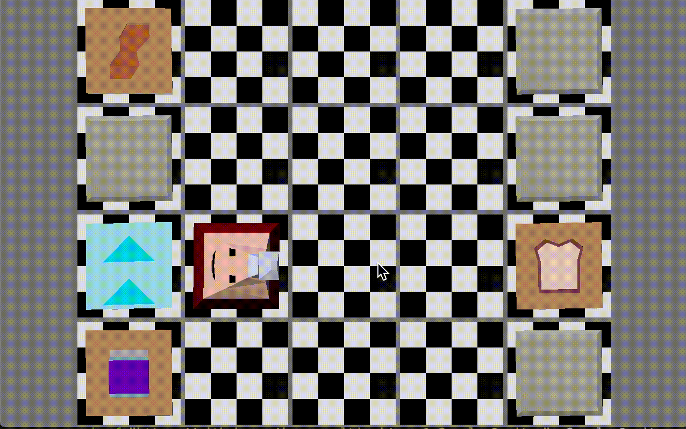

Below are a compilation of several games I built in the Computer Game Programming class. They are all my own personal designs and all include assets I created for the games.
Undercooked
The first project I worked on was a simplified 1 player version of the game Overcooked, the main goal here was to get used to the OpenGL pipeline. In addition, this project involved figuring out how to export vertex colors using Blender. Relatively simple, the idea being to assemble a peanut butter and jelly sandwhich.

The Gnarly Janitor
This project entailed implementing walkmesh data structure as well as scene loading with transform hierarchies. The concept of this game is to clean up some messes and spills on at a skatepark.

Fish Off
The game involved creating a multiplayer game using an online server. Although a relatively simple implementation, the server program handles a lot of the computation while the clients fill the drawing. The object in this game is to catch more fish than your opponent.

Sweet Darkness
This project was my first major step into working with shaders using GLSL. This involved implementing shadow maps as well as working with textures. The object of this game is to keep the ice cream in the shadow as it orbits in space.